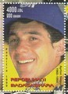
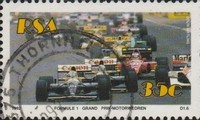
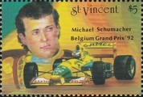
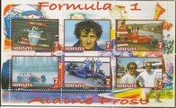
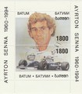
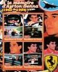
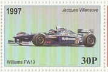
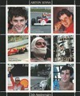

Formula 1 Seasons
Below is a list of all of the Formula 1 seasons in the decade; click on a year to see the cars and drivers featured on stamps for that specific Formula 1 season. Also listed are any specific events for the season featured on stamps in my collection and/or any stamps that feature the season in question. Click on an event or a championship winning driver name to see the stamps featuring that particular event or driver.
Below is a list of all of the Formula 1 seasons in the decade; click on a year to see the cars and drivers featured on stamps for that specific Formula 1 season. Also listed are any specific events for the season featured on stamps in my collection and/or any stamps that feature the season in question. Click on an event or a championship winning driver name to see the stamps featuring that particular event or driver.
1990
A new team, Life, appeared on the grid; the team used its own unconventional W12 engine design. The drivers were Gary Brabham, son of triple World Champion Sir Jack Brabham, and Bruno Giacomelli, who had not driven in Formula 1 since 1983. So with 39 cars being entered six teams needed to pre-qualify, they were the two-car teams of Larrousse, AGS and EuroBrun along with single-car teams of Osella, Coloni and Life. Gerhard Berger moved to McLaren to partner Ayrton Senna and Alain Prost, Senna's great rival and former team-mate, moved to Ferrari to join Nigel Mansell.
A new team, Life, appeared on the grid; the team used its own unconventional W12 engine design. The drivers were Gary Brabham, son of triple World Champion Sir Jack Brabham, and Bruno Giacomelli, who had not driven in Formula 1 since 1983. So with 39 cars being entered six teams needed to pre-qualify, they were the two-car teams of Larrousse, AGS and EuroBrun along with single-car teams of Osella, Coloni and Life. Gerhard Berger moved to McLaren to partner Ayrton Senna and Alain Prost, Senna's great rival and former team-mate, moved to Ferrari to join Nigel Mansell.
Constructor Title: McLaren |
Driver Title: Ayrton Senna |
1990 Mexican Grand Prix |
Charity Souvenir Stamp featuring the 1990 F1 Season  |
1991
Three teams that had been on the grid the previous year failed to make the grid in 1991: EuroBron, OnyX Grand Prix and Life. The Osella team became Fondmetal. A successful team in International Formula 3000, Jordan Grand Prix appeared on the grid for the first time. The other new entrant was the Modena Team, which was effectively Lamborghini, but the team struggled financially and regularly failed to qualify, so the team only existed for one season. The points system was changed - the winning driver was awarded 10 points (instead of 9). More significantly, points from all races now counted towards the championship (instead of the best eleven results as previously). Four drivers had dominated the championship since 1985 - Ayrton Senna, Nigel Mansell, Nelson Piquet, and Alain Prost - this was the last season that they all competed together.
Three teams that had been on the grid the previous year failed to make the grid in 1991: EuroBron, OnyX Grand Prix and Life. The Osella team became Fondmetal. A successful team in International Formula 3000, Jordan Grand Prix appeared on the grid for the first time. The other new entrant was the Modena Team, which was effectively Lamborghini, but the team struggled financially and regularly failed to qualify, so the team only existed for one season. The points system was changed - the winning driver was awarded 10 points (instead of 9). More significantly, points from all races now counted towards the championship (instead of the best eleven results as previously). Four drivers had dominated the championship since 1985 - Ayrton Senna, Nigel Mansell, Nelson Piquet, and Alain Prost - this was the last season that they all competed together.
Constructor Title: McLaren |
Driver Title: Ayrton Senna  |
1991 Mexican Grand Prix |
Charity Souvenir Stamp featuring the 1991 F1 Season  |
1992
Both the Constructors' and Drivers' championships were secured at the Belgian Grand Prix, round 12 of 16, as Nigel Mansell and Williams had dominated. At the British Grand Prix, the fans invaded the race track to congratulate the local hero, Nigel Mansell - Mansell's car was blocked by the crowd, preventing him from driving back to the pits. Eventually Mansell was returned to the pits by the track marshalls to attend the podium ceremony. In the race Mansell had achieved a Grand Slam (led every lap from pole position and set fastest lap of the race), and had become the most successful British Formula 1 driver of all time, by surpassing Jackie Stewart's 27 wins with his 28th win.
Both the Constructors' and Drivers' championships were secured at the Belgian Grand Prix, round 12 of 16, as Nigel Mansell and Williams had dominated. At the British Grand Prix, the fans invaded the race track to congratulate the local hero, Nigel Mansell - Mansell's car was blocked by the crowd, preventing him from driving back to the pits. Eventually Mansell was returned to the pits by the track marshalls to attend the podium ceremony. In the race Mansell had achieved a Grand Slam (led every lap from pole position and set fastest lap of the race), and had become the most successful British Formula 1 driver of all time, by surpassing Jackie Stewart's 27 wins with his 28th win.
Constructor Title: Williams |

Nigel Mansell F1 World Champion 1992  |
Formula 1 - 1992 South African Grand Prix |
1992 Mexican Grand Prix |
1992 - 50th Monaco Grand Prix |
Michael Schumacher Maiden Victory (Belgium 1992) |
Michael Schumacher Maiden Victory (Belgium 1992)  |
Charity Souvenir Stamp featuring the 1992 F1 Season  |
1993
There was a major shake-up in the driver line ups amongst the top teams - a number of experienced drivers either retired on went to compete on other series. Most notably, Nigel Mansell moved to IndyCar racing. Alain Prost returned to Williams a ""sabbatical"" year - but with Mansell gone, Williams could not use the number 1 on their cars, so the number 0 was used instead. The worldwide recession saw the failure of March and Fondmetal to make it to grid this year. As a result, only 26 cars were entered - so the qualifying format was changed. The fastest 24 cars were permitted to race, however, the teams elected to make this 25, so that each team could race at least one car. Alain Prost did not defend his title in 1994, so the Williams cars had to once again use numbers 0 and 2 for the next season.
There was a major shake-up in the driver line ups amongst the top teams - a number of experienced drivers either retired on went to compete on other series. Most notably, Nigel Mansell moved to IndyCar racing. Alain Prost returned to Williams a ""sabbatical"" year - but with Mansell gone, Williams could not use the number 1 on their cars, so the number 0 was used instead. The worldwide recession saw the failure of March and Fondmetal to make it to grid this year. As a result, only 26 cars were entered - so the qualifying format was changed. The fastest 24 cars were permitted to race, however, the teams elected to make this 25, so that each team could race at least one car. Alain Prost did not defend his title in 1994, so the Williams cars had to once again use numbers 0 and 2 for the next season.
Constructor Title: Williams |
Driver Title: Alain Prost  |
Charity Souvenir Stamp featuring the 1993 F1 Season  |
1994
Ayrton Senna moved to Williams, a move prompted by the departure of defending World Champion Alain Prost. Two of the top teams unveiled new colour schemes (reflecting new sponsorship details) - Williams' (Rothmans) was navy and white with gold and red trim, and Benetton (Mild Seven) was yellow to the pale blue and mint green. Significant rule changes were introduced to reduce costs and the reliance on technology; in particular all electronic driver-aids (such as active suspension, anti-lock brakes, traction control and launch control) were banned. In race refuelling was also re-introduced (it was last used in 1983). 1994 will of course be remembered for the tragic events of the San Marino Grand Prix, at which Ayrton Senna lost his life at Tamburello.
Ayrton Senna moved to Williams, a move prompted by the departure of defending World Champion Alain Prost. Two of the top teams unveiled new colour schemes (reflecting new sponsorship details) - Williams' (Rothmans) was navy and white with gold and red trim, and Benetton (Mild Seven) was yellow to the pale blue and mint green. Significant rule changes were introduced to reduce costs and the reliance on technology; in particular all electronic driver-aids (such as active suspension, anti-lock brakes, traction control and launch control) were banned. In race refuelling was also re-introduced (it was last used in 1983). 1994 will of course be remembered for the tragic events of the San Marino Grand Prix, at which Ayrton Senna lost his life at Tamburello.
Constructor Title: Williams |

Ayrton Senna Commemorative Sheet |
Ayrton Senna Commemorative Sheet |
Michael Schumacher - World Champion 1994 / 1995 |
Charity Souvenir Stamp featuring the 1994 F1 Season  |
1995
The season was dominated by the Williams and Benetton drivers - Ferrari were competitive, but the car was unreliable and so Ferrari was not able to mount a serious challenge to the two front runners. A number of changes to the technical regulations were announced including a reduction of engine capacity, reduction of aerodynamic wing size, more stringent crash testing, raising of the cars' ride height and more rigorous testing of fuel specifications. The main driver rivalry was between Michael Schumacher and Damon Hill. David Coulthard won his first race in Formula 1 in a Williams-Renault.
The season was dominated by the Williams and Benetton drivers - Ferrari were competitive, but the car was unreliable and so Ferrari was not able to mount a serious challenge to the two front runners. A number of changes to the technical regulations were announced including a reduction of engine capacity, reduction of aerodynamic wing size, more stringent crash testing, raising of the cars' ride height and more rigorous testing of fuel specifications. The main driver rivalry was between Michael Schumacher and Damon Hill. David Coulthard won his first race in Formula 1 in a Williams-Renault.
Constructor Title: Benetton |
Driver Title: Michael Schumacher |
Michael Schumacher Formula 1 Champion 1995  |
Charity Souvenir Stamp featuring the 1995 F1 Season  |
1996
The two Williams-Renault cars dominated the season in the hands of Damon Hill and Jacques Villeneuve. Hill's championship title made him the only son of a World Champion to have won the World Championship himself. However, this season saw the beginning of the end of the Williams 1990's dominance - Hill left at the end of season, as did designer Adrian Newey. Engine supplier Renault also left at the end of the following season. Two-time defending champion Michael Schumacher moved to Ferrari for this season, despite numerous reliability problems the team had developed into a front running team by the end of the season. Conversely, defending constructors' champions Benetton Renault began a decline to the midfield as the team several key personnel due to Schumacher's departure.
The two Williams-Renault cars dominated the season in the hands of Damon Hill and Jacques Villeneuve. Hill's championship title made him the only son of a World Champion to have won the World Championship himself. However, this season saw the beginning of the end of the Williams 1990's dominance - Hill left at the end of season, as did designer Adrian Newey. Engine supplier Renault also left at the end of the following season. Two-time defending champion Michael Schumacher moved to Ferrari for this season, despite numerous reliability problems the team had developed into a front running team by the end of the season. Conversely, defending constructors' champions Benetton Renault began a decline to the midfield as the team several key personnel due to Schumacher's departure.
Constructor Title: Williams |

100 Years of Motor Sport at Spa Francorchamps |
Charity Souvenir Stamp featuring the 1996 F1 Season  |
1997
Three new teams entered Formula 1 - Prost (who replaced Ligier), Stewart and Lola. Lola only managed to enter the Australian Grand Prix as with their poor performance they were unable to secure sponsorship for the next race in Brazil. The Footwork team changed name to become Arrows. Bridgestone came into Formula 1 and supplied tyres to five teams: Arrows, Prost, Minardi, Stewart and Lola. At the qualifying session for the final round in Jerez, three drivers registered the same time (Villeneuve, Schumacher, and Frentzen) - Villeneuve was awarded the pole position as he had set the time first, this was his last pole position. In the race, Schumacher collided with Villeneuve taking himself out, but Villeneuve recovered his Williams sufficiently to take 3rd place and the championship. Schumacher was later disqualified from the championship by the FIA for causing an avoidable accident. Mike Hakkinen won the race - his first career victory.
Three new teams entered Formula 1 - Prost (who replaced Ligier), Stewart and Lola. Lola only managed to enter the Australian Grand Prix as with their poor performance they were unable to secure sponsorship for the next race in Brazil. The Footwork team changed name to become Arrows. Bridgestone came into Formula 1 and supplied tyres to five teams: Arrows, Prost, Minardi, Stewart and Lola. At the qualifying session for the final round in Jerez, three drivers registered the same time (Villeneuve, Schumacher, and Frentzen) - Villeneuve was awarded the pole position as he had set the time first, this was his last pole position. In the race, Schumacher collided with Villeneuve taking himself out, but Villeneuve recovered his Williams sufficiently to take 3rd place and the championship. Schumacher was later disqualified from the championship by the FIA for causing an avoidable accident. Mike Hakkinen won the race - his first career victory.
Constructor Title: Williams |
Driver Title: Jacques Villeneuve |
17th San Marino Grand Prix 1997 |
Formula 1 - Ayrton Senna - 3rd Anniversary of Death |
Jacques Villeneuve - World Champion 1997 |
Charity Souvenir Stamp featuring the 1997 F1 Season |
1998
The FIA introduced new rules to reduce downforce - grooved tyres were introduced and the cars were made narrower. One of the worst accidents in Formula 1 occurred at the start of the Belgian Grand Prix - in extremely wet conditions David Coulthard lost control of his McLaren on the first lap resulting in a collision involving 13 drivers. It took more than an hour to clear the track; the race was restarted with drivers using the spare cars. Damon Hill went on to win for Jordan - their first Grand Prix win and Hill's 22nd and last victory.
The FIA introduced new rules to reduce downforce - grooved tyres were introduced and the cars were made narrower. One of the worst accidents in Formula 1 occurred at the start of the Belgian Grand Prix - in extremely wet conditions David Coulthard lost control of his McLaren on the first lap resulting in a collision involving 13 drivers. It took more than an hour to clear the track; the race was restarted with drivers using the spare cars. Damon Hill went on to win for Jordan - their first Grand Prix win and Hill's 22nd and last victory.
Constructor Title: McLaren |
Mika Hakkinen F1 World Champion - 1998  |
50th Anniversary of Ferrari F1 - 2008 |
Mika Hakkinen F1 World Champion - 1998  |
10th Anniversary of the Death of Enzo Ferrari |
Charity Souvenir Stamp featuring the 1998 F1 Season  |
1999
The Malaysian Grand Prix was added to the Formula 1 calendar. The Tyrrell team was sold to British American Tobacco and became the BAR team. Ferrari's constructors' title paved the way for the Schumacher era of Ferrari dominance - Schumacher himself suffered a broken leg in a crash at the 1999 British Grand Prix, he missed six races but returned before the end of the season. Damon Hill retired at the end of the season.
The Malaysian Grand Prix was added to the Formula 1 calendar. The Tyrrell team was sold to British American Tobacco and became the BAR team. Ferrari's constructors' title paved the way for the Schumacher era of Ferrari dominance - Schumacher himself suffered a broken leg in a crash at the 1999 British Grand Prix, he missed six races but returned before the end of the season. Damon Hill retired at the end of the season.
Constructor Title: Ferrari |

First Malaysian F1 Grand Prix 1999 |
Sepang F1 Cicruit Souvenir Sheet |
Formula 1 (Various) Souvenir Sheet - 1999 |
Canadian Grand Prix 1999 |
Ayrton Senna Commemorative Sheet - 5th anniversary of death |
Charity Souvenir Stamp featuring the 1999 F1 Season  |